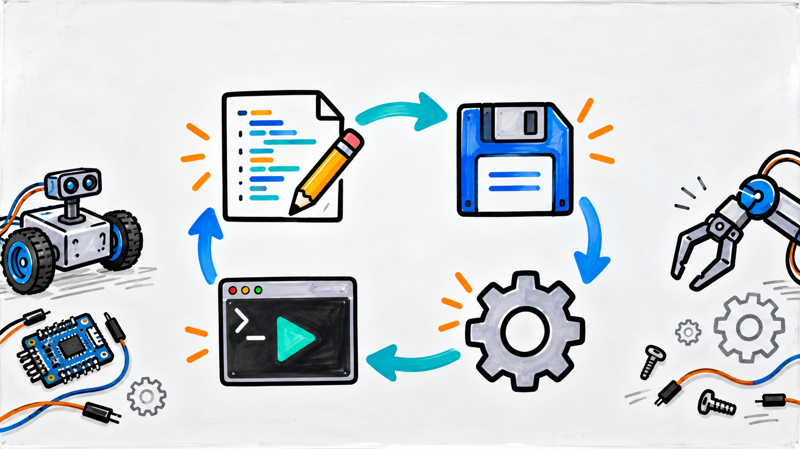

Video
Lesson video
Follow information into a program, test a true-or-false condition, and choose between the if and else paths.
Lesson 3
Students collect terminal input, compare values, and use if else logic to build a robot readiness checker.

Video
Follow information into a program, test a true-or-false condition, and choose between the if and else paths.
Students practice
#include <iostream>
using namespace std;
int main() {
int batteryPercent = 0;
cout << "Enter battery percent: ";
cin >> batteryPercent;
if (batteryPercent >= 50) {
cout << "Battery check passed." << endl;
} else {
cout << "Charge the battery before driving." << endl;
}
return 0;
}